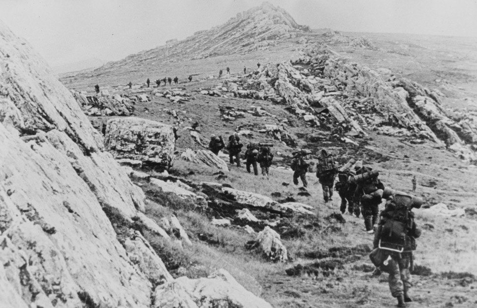
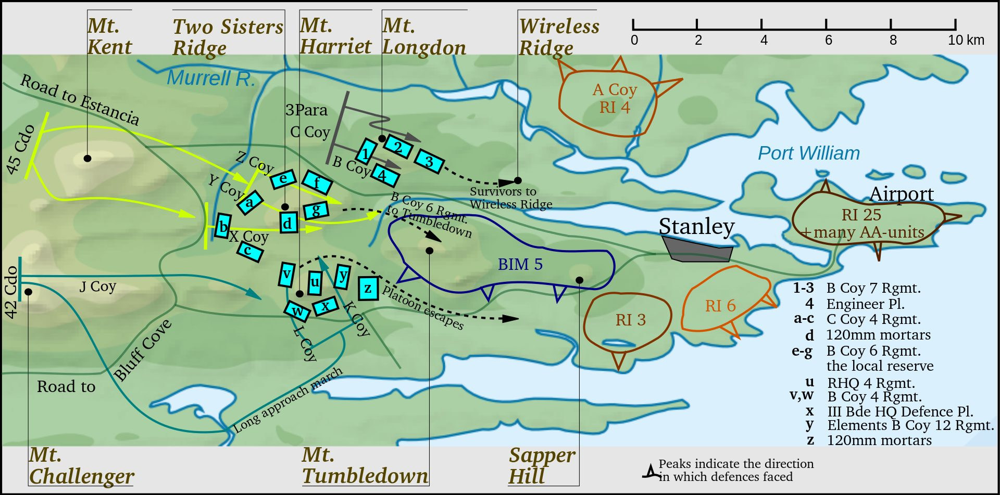
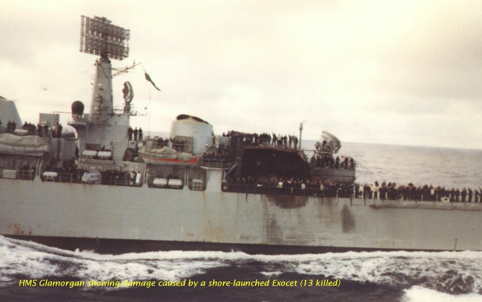
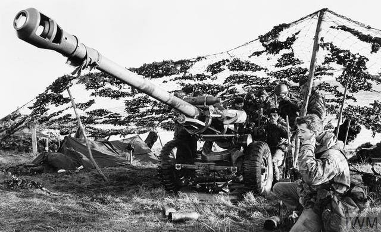
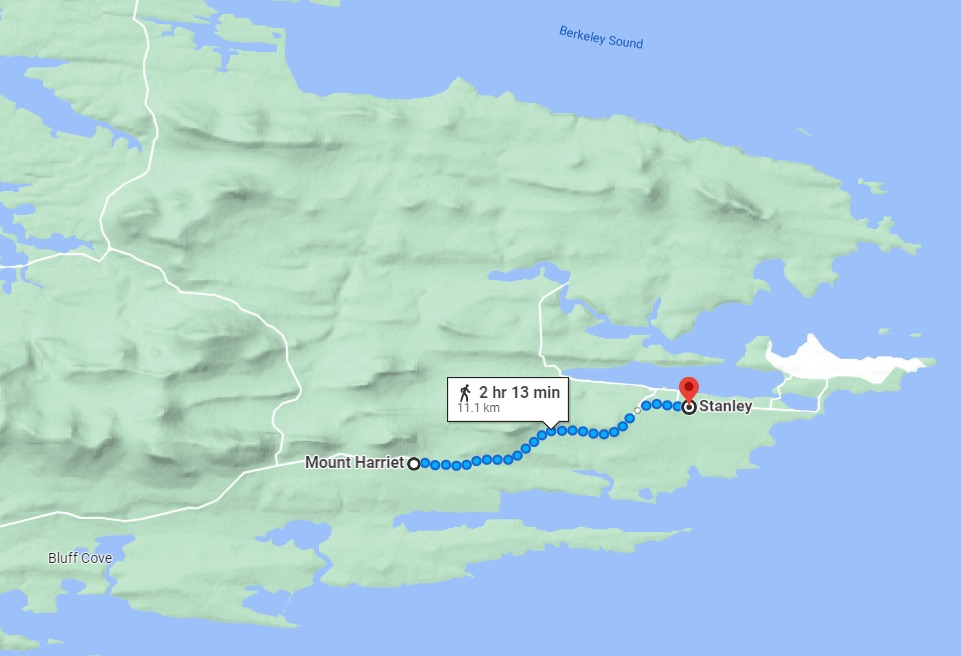
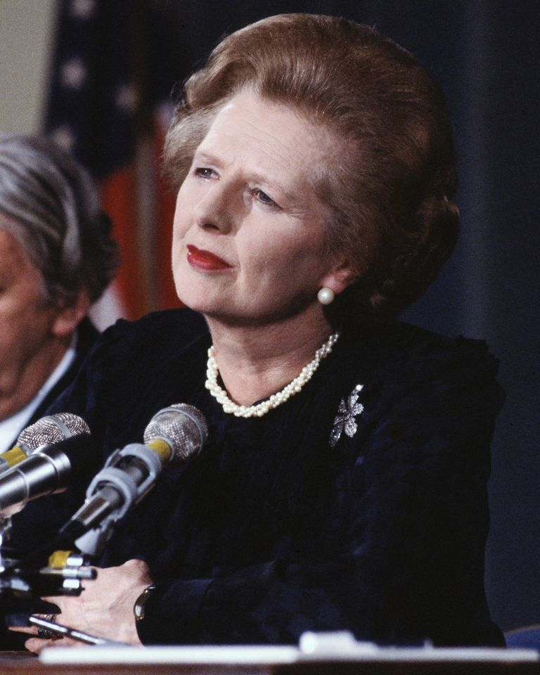
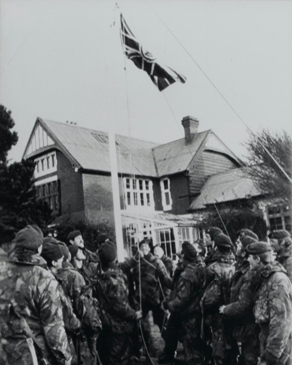
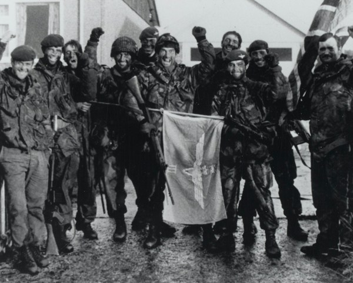
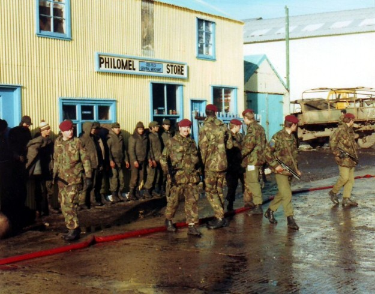

포클랜드 전쟁 잡담 - 아르헨티나군의 항복
게시: 2022-06-09T06:30:44+09:00
<집중돌파 vs. 고지정리> 포클랜드 섬 서쪽의 산 카를로스에 상륙한 영국군은 지속적인 상륙을 통해 병력을 계속 증강시키며 일부는 걸어서, 일부는 헬기로, 일부는 상륙선을 타고 바닷길로 섬 동쪽의 주타겟인 Port Stanley로 접근. 이때 포트 스탠리를 어떻게 공략하느냐에 대해 육군 지휘관인 Wilson 준장과, 여태까지 상륙을 지휘한 해병 지휘관인 Thompson 준장의 의견이 갈림. Wilson : 전투란 집중에 의한 돌파가 기본. 남쪽의 해리엇 산 방면에 전병력을 집중시켜 돌파한 뒤 포트 스탠리를 들이치자. Thompson : 포트 스탠리 서쪽에 병풍처럼 늘어선 산들을 모조리 점령하자. 시간은 걸리겠지만 그래야 뒤통수 걱정없이 안정적으로 작전할 수 있다. 둘다 그럴싸 한 말이긴 한데, 둘 중 하나를 채택하고 그에 대한 책임을 지는 것은 영국 지상군 총사령관인 Jeremy Moore 소장의 몫. 그리고 무어 소장은 톰슨의 안을 채택. 무어의 생각은 고지의 아르헨티나군을 정리하지 않으면 측면에서 아르헨티나군의 사격이 날아올 위험이 있다는 것이었을 뿐 다른 의도가 있지는 않았으나, 결과적으로는 포트 스탠리에 주둔한 아르헨티나군의 사기에 결정적인 영향을 끼친 신의 한 수가 됨.
 
구스그린에서 불필요한 희생자를 내며 악전고투했던 영국군 낙하산연대 제2대대 (2 Para)의 희생이 완전 헛된 것은 아니어서, 그때 고생을 톡톡히 했던 영국군은 2가지 매우 중요한 교훈을 얻음. 그 두가지란 (1) 피해를 줄이려면 야간에 공격하자 (2) 포병 화력을 충분히 확보하자. 그래서 6월 11일~12일 밤에 동시에 벌어진 Two Sisters, Mount Harriet, Mount Longdon 등 3개 산악전 직전에, 영국군은 헬기를 이용하여 105mm 야포와 그 탄약을 최대한 전방에, 그리고 최대한 많이 공수. 무려 12,000발을 가져다놓았는데, 이는 총 3문의 야포와 960발의 포탄만 준비했던 구스그린 전투와는 매우 대조되는 부분. 그리고 구스그린에서 엉뚱한 곳만 두들겨댔던 영국 해군 함포 지원을 좀더 정교하게 유도하기 위해 해군 포술장교도 데려와 지상군과 함께 움직이도록 함. 불행히도 일부 해군 포술장교는 적의 사격에 부상을 입고 낙오되었지만 다른 해군 병사가 그 뒤를 이어 함포 지원을 훌륭하게 유도. 결국 저 3개 고지를 밤사이에 모조리 점령. 다만 그렇게 투 시스터즈 전투에서 새벽까지 함포 사격을 해주던 HMS Glamorgan은 너무 늦게까지 해안 근처에 머물다가 결국 해안에서 발사된 지상발사 엑조세 미사일에 피격, 자기가 지원해주던 그쪽 방면 영국 지상군이 7명의 전사자를 낸 것에 비해 그보다 더 많은 14명의 전사자를 냄.

<아르헨티나군은 어떻게 해야 했을까> 영국군이 포트 스탠리 서쪽의 3개 고지를 하룻밤 사이에 점령한 것은 영국군이 우월한 화력과 병력을 착실히 준비한 것이 주된 이유. 그러나 아르헨티나군의 방비가 상대적으로 몹시 빈약했던 것도 한몫. 가령 Two Sisters 고지 전투에 영국군은 600명과 6문의 야포, 그리고 HMS Glamorgan까지 준비했으나, 영국군이 쳐들어오는 것을 뻔히 아는 아르헨티나군은 거기에 딱 350명만 배치. 먼저 유리한 위치인 고지를 점령하고 있으니 그렇게 소수만 배치할 수도 있겠다 싶으나 보급도 불충분하여 이미 6월 1일에 그 지휘관은 휘하 병사들에게 비상용 전투식량을 까먹어도 좋다고 허락할 정도. 이들은 춥고 고립된 고지에서 정서적으로도 불안했고, 험한 산꼭대기이다보니 참호를 파는 정도의 방비만 했을 뿐 본격적인 강화 진지를 갖추지는 못했음. 아르헨티나군이 서쪽 고지들에 더 많은 수비병력을 배치해야 했을까? 그것도 아리까리. 병력을 분산시키는 것은 병가에서 엄금하는 흔한 실수. 특히 헬기 부족과 제공권 상실로 유사시 고지에 분산시켰던 병력을 신속하게 재배치하는 것이 불가능한 상황에서는 더더욱 그러함. 그렇다고 서쪽 고지들을 그런 식으로 소수병력만 배치한 채 내버려두면 영국군에게 그냥 갖다바치는 셈이고 실제로 그렇게 됨. 가장 큰 문제는 서쪽 고지들을 모조리 내줌으로써 포트 스탠리가 훤히 내려다보이게 되었다는 점. 가령 해리엇 산으로부터 포트 스탠리까지는 불과 10km로서, 영국군이 산꼭대기에 배치할 수 있는 105mm 곡사포의 사정거리 14km 안쪽에 넉넉히 들어오는 거리.
 
거기에다 제해권을 장악한 영국군은 이따금씩 포격만 하면서 그냥 진을 치고 앉아있으면 포트 스탠리의 1만이 넘는 아르헨티나 수비군은 그냥 굶어죽는 것. 시간은 영국군의 편. 아르헨티나군도 그 사실을 잘 알고 있었음.
<발없는 말이 천리 간다> 6월 13일~14일 영국군은 3개 고지를 넘어 포트 스탠리로 가는 마지막 고지들인 Mount Tumbledown과 Wireless 능선을 역시 야간공격을 통해 점령. 점령한 고지에서 해가 뜨면서 내려다 보니 포트 스탠리 외곽에 배치되어있던 아르헨티나 병사들이 포트 스탠리 시가지 안으로 철수하는 것이 보였음. 구르카 부대의 Bill Dawson 소령은 당시 Two Sisters 능선의 야전 천막에 있었는데, 구르카 부대 A 중대의 누군가로부터 무선을 통해 '포트 스탠리에 백기가 펄럭이고 있다'는 소리를 들음. 그는 곧장 텐트에서 나와 (아직 헤드폰을 머리에 쓴 채) 밖에서 소식을 기다리던 종군 기자들에게 이렇게 말했고 그 장면이 방송 카메라에 고스란히 녹화됨. "스탠리에 백기들이 휘날린다고 확인드립니다. 아르헨티나군이 항복했어요 - 우라지게 기쁘네요." (I can confirm that white flags are flying over Stanley, the Argentines have surrendered – Bloody marvellous.) 때마침 항모에서 날아온 공군 소속 Harrier GR.3가 포트 스탠리에 폭탄을 투하하러 날아오다가 지상 관제 요원으로부터 '백기가 휘날리고 있으니 폭격을 중단하라'는 명령을 받고 그대로 회항하여 HMS Hermes에 착륙하여 그 기쁜 소식을 전대장 Linley Middleton 대령, 그리고 함대사령관 Sandy Woodward 소장에게도 보고. 곧 이 소식은 런던으로도 알려짐. 총리 마가렛 댓처는 일단 이 소식에 엠바고를 걸고 각료들과 상의 후 가장 극적인 순간에 이 기쁜 뉴스를 직접 발표하기로 함. 결국 14일 저녁 10시 15분 (포클랜드 시간으로는 저녁 6시 15분)에 의회에서 발언권을 얻은 뒤 아래와 같이 발표. "... 많은 수의 아르헨 병사들이 무기를 내려놓았습니다. 포트 스탠리에 백기가 휘날리고 있다는 보고를 받았습니다. 우리 병사들은 자기방어가 아닌 이상 발포 금지 명령을 받았습니다..." (Large numbers of Argentine soldiers threw down their weapons. They are reported to be flying white flags over Port Stanley. Our troops have been ordered not to fire except in self-defence.) 그러나 실제로는 아무도 백기를 보지 못함. 아르헨티나군도 아무도 백기를 내걸지 않았다고 했고, 포트 스탠리의 영국계 주민들도 모두 그런 거 못 봤다고 증언. 줄리언 톰슨 준장 본인도 그 뉴스를 듣고는 직접 망원경으로 샅샅이 살펴 보았으나 백기는 없었음. 어떤 해병 하나가 '뭔가 하얀 것이 보인다... 근데 그냥 빨랫줄에 걸린 누군가의 속바지(knickers) 같다' 라고 보고. 하지만 아무도 '백기에 대한 보고는 오보였다, 그거 캔슬'이라고 런던에 보고하지 못함.

<언제나 자존심은 살려주자> 마가렛 댓처가 당당하게 아르헨티나군의 항복 소식을 전할 때 실제로 아르헨티나군은 아직 항복하지 않았음. 다만 약 3시간 뒤, 실제로 영국군에게 항복. 포트 스탠리의 아르헨티나 지상군 총사령관 Mario Menéndez 장군은 아르헨티나 본토의 군부로부터 '전체 병력의 50% 이상 사상자가 발생하거나 탄약의 75% 이상을 소진했을 때만 항복하라, 그 전에 항복하면 군사재판에 회부하겠다'라는 통보를 받았음. 그러나 지 혼자 살자고 전체 병력 1만 중 절반, 그러니까 5천명이 죽거나 다칠 때까지 기다릴 수는 없는 법. 그는 과감하게 영국군과 항복 협상을 벌였고 결국 항복. 원래 영국군은 'unconditional surrender'라는 단어를 항복 문서에 넣었으나 메넨데스 장군은 끝까지 고집을 부려 문서에 타이핑된 unconditional이라는 단어에 찍찍 취소선을 긋고 난 뒤에야 항복 문서에 서명. 그 외에도 항복한 장교들은 권총 휴대를 허가받는 정도에서 협상. 총 11,313명의 아르헨티나 병사들이 항복했고, 그 중 5천은 여객선 SS Canberra에, 그리고 1천은 화물선 MV Norland에 실려 3일 뒤인 6월 17일에 즉각 아르헨티나 본토로 송환됨. 6월 20일까지는 10,250명이 그런 식으로 송환되었고, 메넨데스 장군을 비롯한 593명은 정보 획득과 아르헨티나 본국에 대한 압박 용도로 한참 더 붙들려 있었음.
  